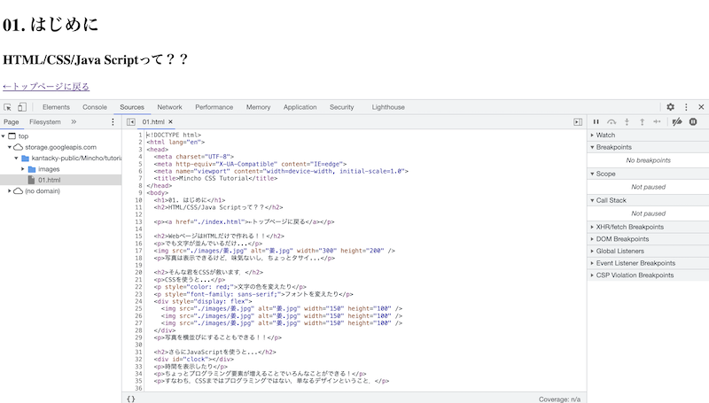

←トップページに戻る
02. 上達のためにやるべきこと とにかく他のマネをする！！→
01. はじめに
HTML/CSS/Java Scriptって？？
WebページはHTMLだけで作れる！！
でも文字が並んでいるだけ...
写真は表示できるけど，味気ないし，ちょっとタサイ...
そんな君をCSSが救います．
CSSを使うと...
文字の色を変えたり
フォントを変えたり
写真を横並びにすることもできる！！
さらにJavaScriptを使うと...
時間を表示したり
ちょっとプログラミング要素が増えることでいろんなことができる！
すなわち，CSSまではプログラミングではない，単なるデザインということ．
このページの中身を見るためには...
方法は主に3つ．
- F12キーを押して開発者ツールのソースタブから見る
- ページを右クリックしてページソースを表示を押して見る
- Cmd+SでページをHTMLで保存して見る

02. 上達のためにやるべきこと とにかく他のマネをする！！→
←トップページに戻る